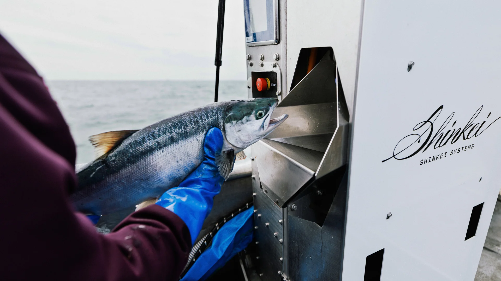
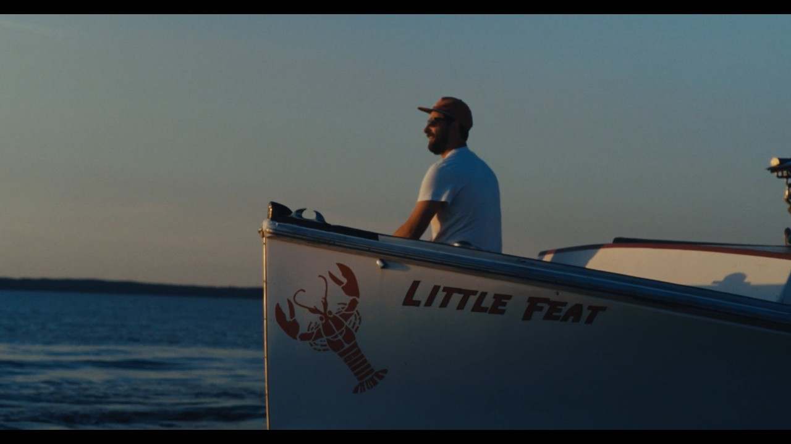

POSEIDON
Humane harvest in seconds, on deck.

A BETTER CATCH BEGINS HERE
THE SPECIFIC PROMISE
Shinkei brings robotics and computer vision to an artisanal Japanese harvest practice so fishermen can retain value, buyers can see provenance, and diners can taste the difference.
THE SHINKEI SYSTEM / THREE SIGNALS
Humane harvest in seconds, on deck.
Peak flavor and a longer useful life.
A signal from deck to dinner plate.

THE FLEET / LITTLE FEAT
Before a fish becomes a product, it is handled by a person who knows the water, the boat, and the cost of a poor catch.